Pseudoxyrhophiidae
The family Pseudoxyrhophiidae (Malagasy snakes and allies) has 93 species in SnakeList (none venomous), in 23 genera.
- 93species
- 93non-venomous
- 23genera
About the family
The Malagasy snakes and their allies, including the Malagasy hognose snakes and the brook snakes. It was formerly treated as a subfamily of the Lamprophiidae.[1]
Sources for this introduction
- Lamprophiidae (former subfamilies). Wikipedia.
Information last reviewed 9 November 2026.
Species
Showing 93 species
- No photo yetAmbilobe Leaf-nosed SnakeLangaha pseudoalluaudi
 Ambre Brook SnakePseudoxyrhopus ambreensis
Ambre Brook SnakePseudoxyrhopus ambreensis Ampijoroa Tree SnakeLycodryas pseudogranuliceps
Ampijoroa Tree SnakeLycodryas pseudogranuliceps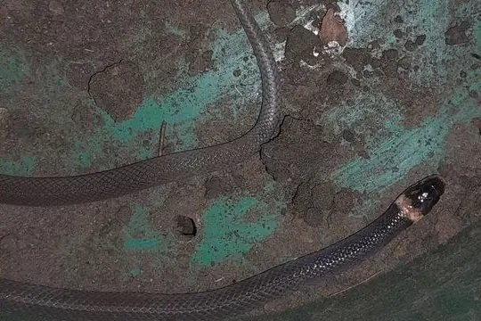
Anatelo Forest Smooth SnakeLiophidium therezieni- No photo yetAndasibe Big-headed SnakeCompsophis vinckei
- No photo yetAnjanaharibe Ground SnakePseudoxyrhopus analabe
- No photo yetAnkafina Ground SnakePseudoxyrhopus ankafinaensis
- No photo yetAnkarana Dwarf SnakeHeteroliodon lava
- No photo yetAntsihanaka Water SnakeLiopholidophis varius
 Antsiranana Cat SnakeMadagascarophis fuchsi
Antsiranana Cat SnakeMadagascarophis fuchsi Antsiranana Tree SnakeLycodryas inopinae
Antsiranana Tree SnakeLycodryas inopinae- No photo yetAntsiranana Water SnakeThamnosophis martae
- No photo yetBader's Water SnakeLiopholidophis baderi
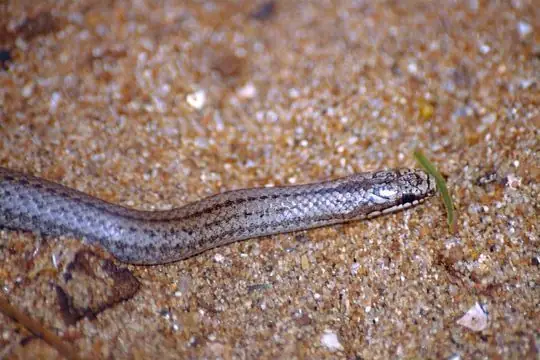
Befandriana Smooth SnakeLiophidium apperti Bernier's Striped SnakeDromicodryas bernieri
Bernier's Striped SnakeDromicodryas bernieri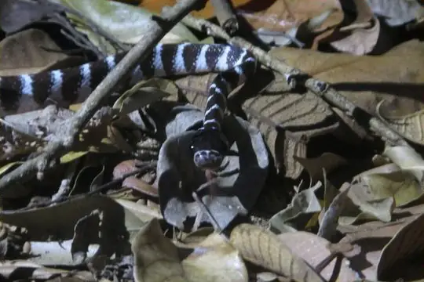
Betsileo White-banded Tree SnakeParastenophis betsileanus Blonde Hognose SnakeLeioheterodon modestus
Blonde Hognose SnakeLeioheterodon modestus Boulenger's Forest SnakeCompsophis boulengeri
Boulenger's Forest SnakeCompsophis boulengeri Brown Brook SnakePseudoxyrhopus microps
Brown Brook SnakePseudoxyrhopus microps Cat-eyed Snake (meridionalis)Madagascarophis meridionalis
Cat-eyed Snake (meridionalis)Madagascarophis meridionalis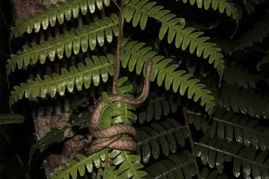
Chevron Necked SnakeMicropisthodon ochraceus- No photo yetCollared Tree SnakeLycodryas guentheri
 Common Slug EaterDuberria lutrix
Common Slug EaterDuberria lutrix Eastern Madagascar Water SnakeThamnosophis epistibes
Eastern Madagascar Water SnakeThamnosophis epistibes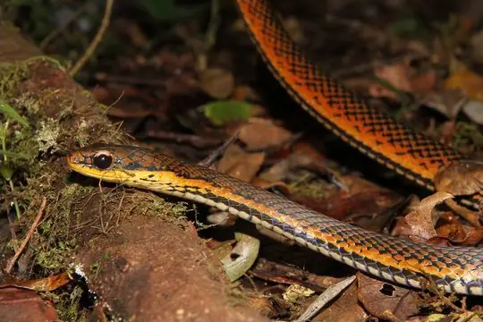
Eastern Rainforest Smooth SnakeLiopholidophis dolicocercus- No photo yetFew Scaled Water SnakeLiopholidophis oligolepis
- No photo yetFianarantsoa Big-headed SnakeCompsophis zeny
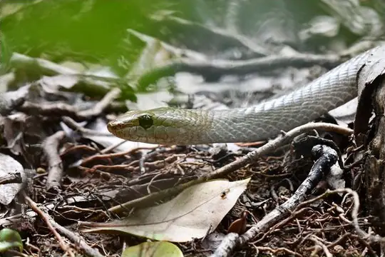
Forest Night SnakeIthycyphus goudoti Forest Water SnakeThamnosophis infrasignatus
Forest Water SnakeThamnosophis infrasignatus Four-striped SnakeDromicodryas quadrilineatus
Four-striped SnakeDromicodryas quadrilineatus Ghost SnakeMadagascarophis lolo
Ghost SnakeMadagascarophis lolo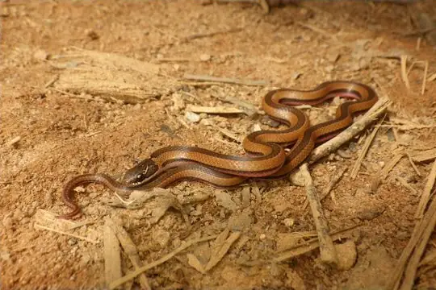
Gold-collarcd SnakeLiophidium rhodogaster- No photo yetGrandidier's Water SnakeLiopholidophis grandidieri
 Günther's RacerDitypophis vivax
Günther's RacerDitypophis vivax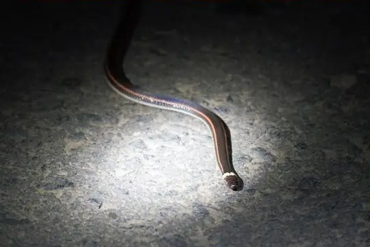
Jan's SnakeElapotinus picteti Lateral Water SnakeThamnosophis lateralis
Lateral Water SnakeThamnosophis lateralis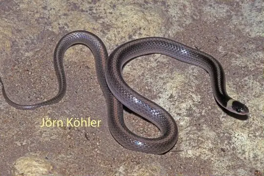
Light-banded Dwarf SnakeHeteroliodon occipitalis Lined Forest SnakeCompsophis infralineatus
Lined Forest SnakeCompsophis infralineatus- No photo yetMadagascar Bighead SnakeCompsophis albiventris
- No photo yetMadagascar Black-bellied Smooth SnakeLiophidium maintikibo
 Madagascar Burrowing SnakePararhadinaea melanogaster
Madagascar Burrowing SnakePararhadinaea melanogaster Madagascar Leaf-nosed SnakeLangaha madagascariensis
Madagascar Leaf-nosed SnakeLangaha madagascariensis Madagascar Night SnakeMadagascarophis colubrinus
Madagascar Night SnakeMadagascarophis colubrinus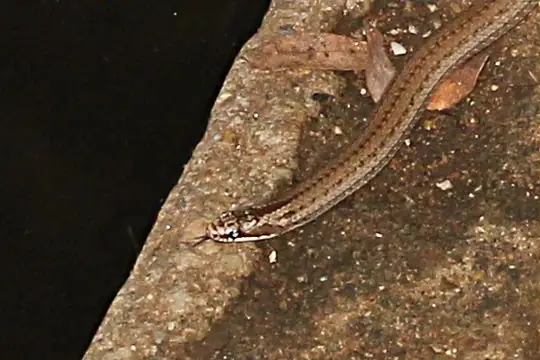
Madagascar Three-lined SnakeLiophidium trilineatum- No photo yetMahajanga Big-headed SnakeCompsophis fatsibe
 Malagasy Giant Hognose SnakeLeioheterodon madagascariensis
Malagasy Giant Hognose SnakeLeioheterodon madagascariensis Manakara Tree SnakeLycodryas gaimardi
Manakara Tree SnakeLycodryas gaimardi- No photo yetMandena Ground SnakePseudoxyrhopus kely
 Many-spotted SnakeAmplorhinus multimaculatus
Many-spotted SnakeAmplorhinus multimaculatus- No photo yetMarojejy Night SnakeIthycyphus blanci
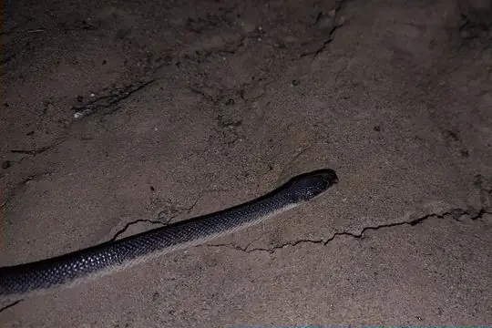
Mocquard SnakeAlluaudina mocquardi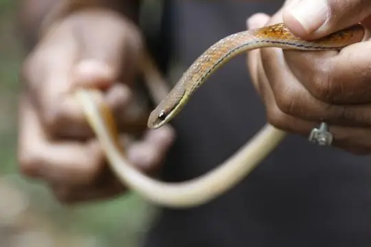
Mount Ambre Water SnakeLiopholidophis dimorphus Night Brook SnakePseudoxyrhopus heterurus
Night Brook SnakePseudoxyrhopus heterurus Nosy Bé Tree SnakeLycodryas granuliceps
Nosy Bé Tree SnakeLycodryas granuliceps Ocellated Cat SnakeMadagascarophis ocellatus
Ocellated Cat SnakeMadagascarophis ocellatus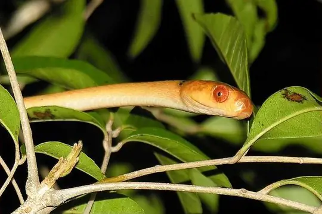
Orange Tree SnakePhisalixella variabilis Pale-headed Forest SnakeBuhoma depressiceps
Pale-headed Forest SnakeBuhoma depressiceps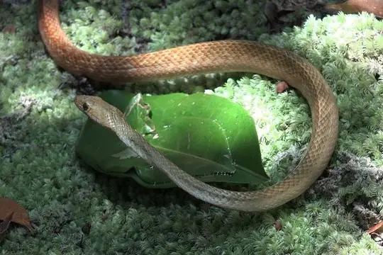
Perinet Night SnakeIthycyphus perineti Peters' Bright SnakeLiophidium mayottensis
Peters' Bright SnakeLiophidium mayottensis- No photo yetPlain Tree SnakeLycodryas inornatus
- No photo yetPlateau Brook SnakePseudoxyrhopus imerinae
 Ranomafana Big-headed SnakeCompsophis laphystius
Ranomafana Big-headed SnakeCompsophis laphystius- No photo yetRanomafana Ground SnakePseudoxyrhopus oblectator
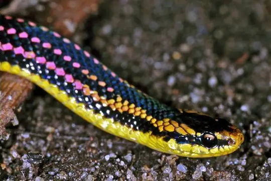
Red-striped Smooth SnakeLiophidium pattoni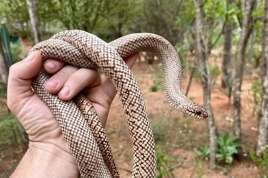
Reticulated Hognose SnakeLeioheterodon geayi Shire Slug EaterDuberria shirana
Shire Slug EaterDuberria shirana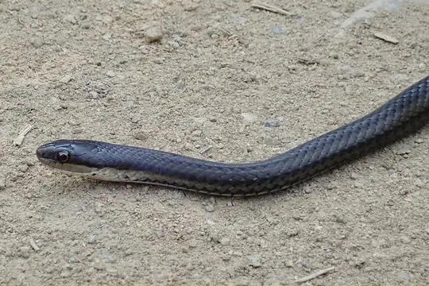
Six-lined Water SnakeLiopholidophis sexlineatus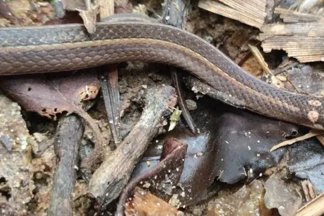
Slender Smooth SnakeLiopholidophis rhadinaea Sokosoko Ground SnakePseudoxyrhopus sokosoko
Sokosoko Ground SnakePseudoxyrhopus sokosoko- No photo yetSouthern Leafnose SnakeLangaha alluaudi
 Southwestern Night SnakeIthycyphus oursi
Southwestern Night SnakeIthycyphus oursi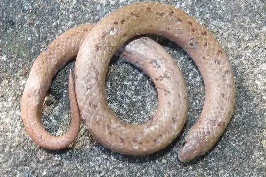
Spotted Slug EaterDuberria variegata Spotted Tree Snake (cococola)Lycodryas cococola
Spotted Tree Snake (cococola)Lycodryas cococola Spotted Tree Snake (maculatus)Lycodryas maculatus
Spotted Tree Snake (maculatus)Lycodryas maculatus- No photo yetStout Dwarf SnakeHeteroliodon fohy
 Striped Brook SnakePseudoxyrhopus quinquelineatus
Striped Brook SnakePseudoxyrhopus quinquelineatus Three-striped Ground SnakePseudoxyrhopus tritaeniatus
Three-striped Ground SnakePseudoxyrhopus tritaeniatus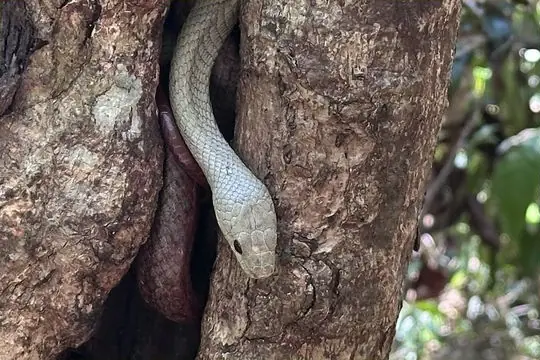
Tiny Night SnakeIthycyphus miniatus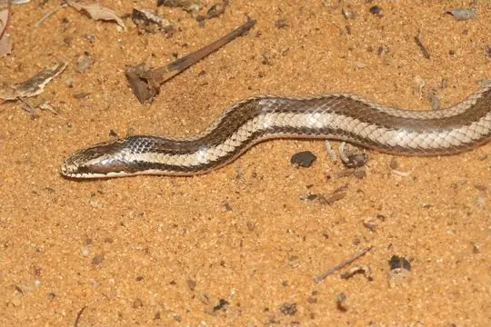
Toliara Smooth SnakeLiophidium chabaudi- No photo yetUluguru Forest SnakeBuhoma procterae
 Usambara Forest SnakeBuhoma vauerocegae
Usambara Forest SnakeBuhoma vauerocegae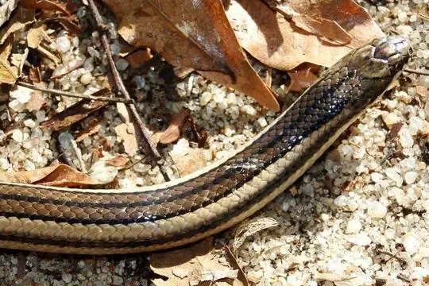
Vaillant's Madagascar Ground SnakeLiophidium vaillanti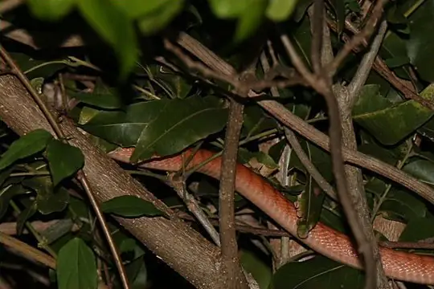
Western Banded Tree SnakePhisalixella tulearensis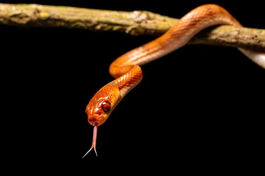
White Banded Tree SnakePhisalixella arctifasciata White-lipped Smooth SnakeLiophidium torquatum
White-lipped Smooth SnakeLiophidium torquatum Yellow-and-black Tree SnakeLycodryas citrinus
Yellow-and-black Tree SnakeLycodryas citrinus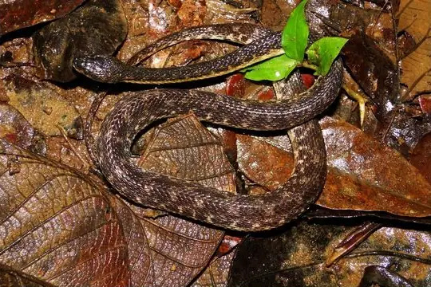
Yellow-flanked Keeled SnakeAlluaudina bellyi Yellow-striped Water SnakeThamnosophis stumpffi
Yellow-striped Water SnakeThamnosophis stumpffi- No photo yetYellow-throated Water SnakeThamnosophis mavotenda
 Zimbabwean Slug EaterDuberria rhodesiana
Zimbabwean Slug EaterDuberria rhodesiana- No photo yetBrygophis coulangesi
- No photo yetLycodryas carleti
- No photo yetPhisalixella iarakaensis
No snakes in Pseudoxyrhophiidae match.
About the family Pseudoxyrhophiidae
- Genera: Pseudoxyrhopus 11, Liophidium 10, Lycodryas 10, Liopholidophis 8, Compsophis 7, Thamnosophis 6, Ithycyphus 5, Madagascarophis 5, Duberria 4, Phisalixella 4, Buhoma 3, Heteroliodon 3, Langaha 3, Leioheterodon 3, Alluaudina 2, Dromicodryas 2, Amplorhinus 1, Brygophis 1, Ditypophis 1, Elapotinus 1, Micropisthodon 1, Pararhadinaea 1, Parastenophis 1.